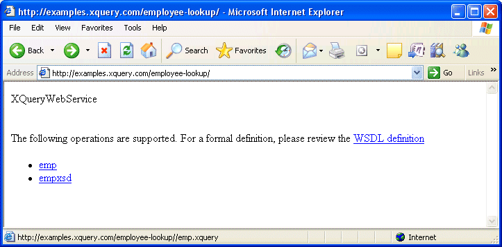
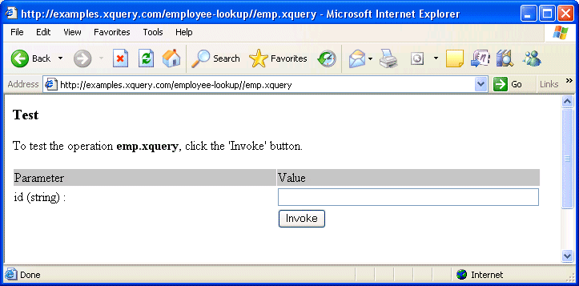

Tools for Testing Web Service Operations
The XQueryWebService framework dynamically lists all the operations exposed by the Web service created from the XQuery in your Java servlet container's XQuery directory. This page, for example, was generated by the Employee Lookup example:

To display this page, just point your browser to the XQueryWebService root – http://examples.xquery.com/employee-lookup/, for example.
This HTML form is dynamically created by parsing the XQuery. Clicking one of the exposed Web service operations (in our example, emp) displays another HTML form you can use to provide values for testing purposes.
The HTML Test Interface
A simple HTML interface allows you to test an operation. For example, if we click the “emp” operation, the following HTML page is generated:

To test the operation, simply provide the requested value and click the Invoke button. Again, the testing interface is generated dynamically, so the form itself varies based on the operation – if an operation does not require a parameter, it is invoked as soon as you select it. This functionality is supported by the REST technology only.
Next Steps
If you choose to use the SOAP transport mechanism in your Web application, you might want to take advantage of the XQueryWebService framework’s ability to generate a WSDL document. (A WSDL document can be used to create a set of classes that allows you to manipulate a data service as if it was a local library.) Learn about generating a WSDL document in the next section.